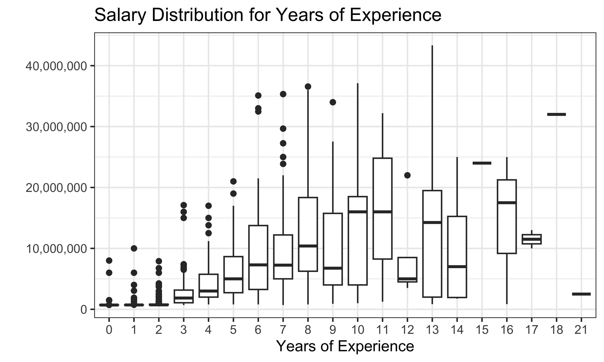
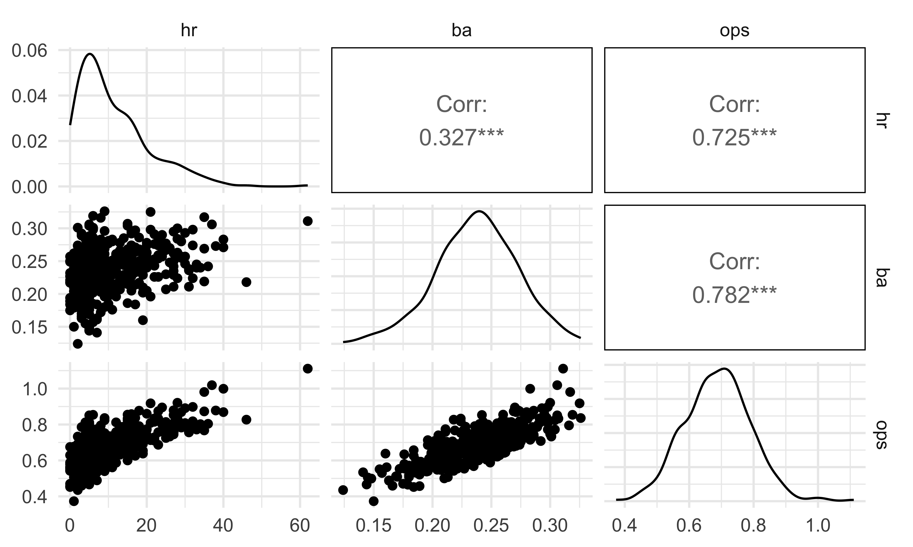
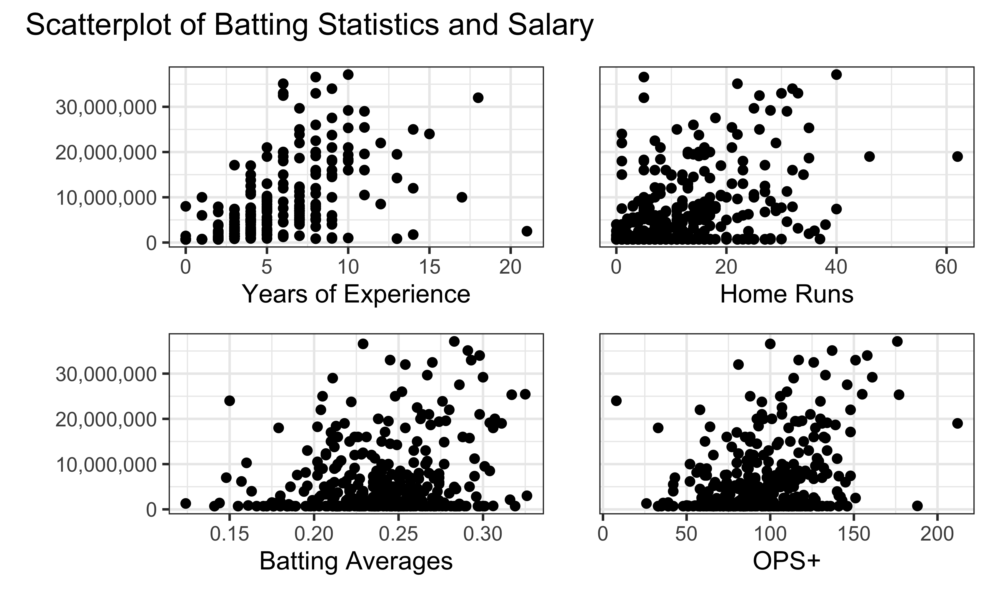
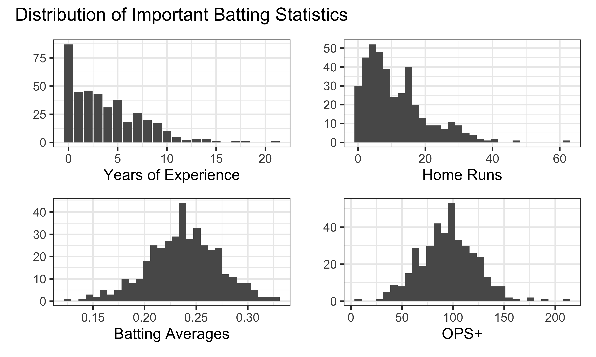
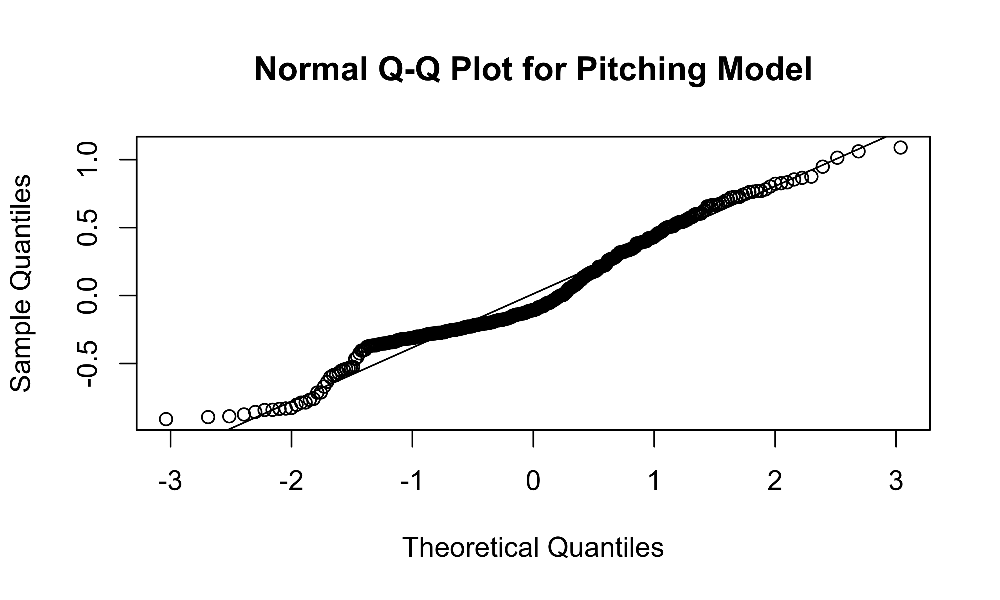

Final_Report_Draft
Cameron Chesbrough
2024-11-07
Motivation
MLB player salaries are growing faster than ever. In 2001, former Seattle Mariners superstar Alex Rodriguez signed a 10-year, $252 million deal that broke the record for the most lucrative contract in professional sports history. And yet, Rodriguez’s deal pales in comparison to the monster contract that current superstar Juan Soto is expected to sign within the next week, which is projected to go for at least 12 years and $600 million. The skyrocketing salaries don’t just apply to the game’s most marquee names; since 2003, the average player salary has more than doubled, from $2.37 million to $4.98 million for the 2024 season (source: https://www.statista.com/statistics/236213/mean-salaray-of-players-in-majpr-league-baseball/). As players become more and more expensive,
The primary goal of our project is to determine whether baseball players – both batters and pitchers – are worth their salaries, and whether teams should focus primarily on signing big-money free agents or taking a more egalitarian and young player-heavy approach. More specifically, are advanced statistics such as OPS+ (for hitters) and ERA+ (for pitchers) significantly associated with player salary? Our conclusions could give MLB teams insight into how they can build their rosters to optimize their chances of making the postseason and ultimately winning the World Series.
Initial questions
Before beginning the project, we set out to potentially answer three primary questions:
What collected statistics are most correlated with salary? Are advanced statistics such as ERA closer than simple counts such as strikeouts?
Are GMs good at deciding who to give contracts? That is, do the players with the highest salaries have the best performance metrics?
Can we predict the salary of a player with a model built from their 2022 statistics?
After conducting an exploratory data analysis, we adjusted our questions into:
Data
Data Cleaning Code
Setup
Salary Data
salaries = read_excel(
"data/MLB-Salaries 2000-24.xlsx",
sheet = "2022.xls",
skip = 1) |>
select(1:4) |>
rename(position = "Pos'n",
salary_2022 = "2022.0",
service_time_yrs = "MLS",
name = "Player") %>%
mutate(name = str_split(name, ","),
name = map(name, rev),
name = map_chr(name, str_c, collapse = " "),
name = str_trim(name),
name = str_replace_all(name, "[*#\\.,]", ""),
junior = str_detect(name, "Jr"),
name = if_else(junior == TRUE, str_remove(name, " Jr"), name),
name = if_else(junior == TRUE, str_c(name, " Jr"), name),
name = stringi::stri_trans_general(name,id = "Latin-ASCII")) |>
select(-junior) %>%
mutate(simple_position = str_split_i(position, "-", 1),
simple_position = fct_relevel(simple_position,
c("c", "1b", "2b", "3b", "ss",
"lf", "cf", "rf", "inf", "of",
"dh", "rhp", "lhp")),
service_time_floor = floor(service_time_yrs))Batting Data
batting = read_delim("data/2022 MLB Player Stats - Batting.csv", delim = ";",
locale = locale(encoding = "latin1")) |>
janitor::clean_names() %>%
group_by(name) |>
mutate(name_count = n(),
keep_row = case_when(name_count == 1 ~ TRUE,
name_count > 1 & tm == "TOT" ~ TRUE,
.default = FALSE)) |>
filter(keep_row == TRUE) %>%
mutate(name_count = n(),
keep_row = case_when(name_count == 1 ~ TRUE,
name_count > 1 & lg == "MLB" ~ TRUE,
.default = FALSE)) |>
ungroup() |>
filter(keep_row == TRUE) %>%
mutate(name = str_split(name, "\\s+"),
name = map_chr(name, str_c, collapse = " "),
name = str_trim(name),
name = str_replace_all(name, "[*#\\.]", ""),
name = stringi::stri_trans_general(name,id = "Latin-ASCII"))
merged_batting <- salaries |>
mutate(simple_position = str_split_i(position, "-", 1)) |>
filter(!simple_position %in% c("rhp","lhp")) |>
inner_join(batting, by = "name") |>
filter(pa >= 100)
salary_not_in_batting <- anti_join(salaries, batting, by = "name")
batting_not_in_salary <- anti_join(batting, salaries, by = "name")Pitching Data
(same data cleaning process as above)
pitching = read_delim("data/2022 MLB Player Stats - Pitching.csv", delim = ";",
locale = locale(encoding = "latin1")) |>
janitor::clean_names() %>%
group_by(name) |>
mutate(name_count = n(),
keep_row = case_when(name_count == 1 ~ TRUE,
name_count > 1 & tm == "TOT" ~ TRUE,
.default = FALSE)) |>
filter(keep_row == TRUE) %>%
mutate(name_count = n(),
keep_row = case_when(name_count == 1 ~ TRUE,
name_count > 1 & lg == "MLB" ~ TRUE,
.default = FALSE)) |>
ungroup() |>
filter(keep_row == TRUE) %>%
mutate(name = str_split(name, "\\s+"),
name = map_chr(name, str_c, collapse = " "),
name = str_trim(name),
name = str_replace_all(name, "[*#\\.]", ""),
name = stringi::stri_trans_general(name,id = "Latin-ASCII"))
merged_pitching <- inner_join(salaries, pitching, by = "name") |>
filter(ip >= 20) |>
separate(ip, into = c("ip", "ip_dec"), remove = FALSE, convert = TRUE) |>
mutate(ip_dec_333 = ifelse(is.na(ip_dec), 0, ip_dec * 333) ,
ip_total = paste(ip, ip_dec_333, sep = "."),
ip_total = as.numeric(ip_total)) |>
select(-ip, -ip_dec, -ip_dec_333) |>
separate(position, into = c("hand", "pitcher_type")) |>
mutate(pitcher_type = ifelse(is.na(pitcher_type), "r", pitcher_type)) |>
filter(hand == "lhp" | hand == "rhp")
salary_not_in_pitching <- anti_join(salaries, pitching, by = "name")
pitching_not_in_salary <- anti_join(pitching, salaries, by = "name")Exploratory analysis
Our exploratory data analysis can be grouped into three categories: salary, batting, and pitching.
Player salaries were highly right-skewed. This was expected, as many players make the league minimum salary of 700,000. The one position group not so heavily right skewed are the Designated Hitters. Similarly, the Designated Hitters had a higher average years of experience. Intuitively this makes sense as teams will want to select the better players for the position. Overall, most players were in their first year of the MLB with 68.2% having 5 or less years of experience. Players with more years of experience seem to get higher salaries, increasing as their years of experience.
# Salary by Posiition Group
salaries |>
mutate(position_group = case_match(simple_position,
c("rhp","lhp") ~ "pitcher",
c("cf","lf","rf","of") ~ "outfield",
"dh" ~ "dh",
.default = "infield")) |>
ggplot(aes(x = salary_2022, color = position_group)) +
geom_density() +
labs(title = "Salary by Position Group",
x = "2022 Salary",
y = "") +
scale_x_continuous(labels = label_comma()) +
scale_color_discrete(name = "Position Group",
labels = c("Designated Hitter",
"Infield",
"Outfield",
"Pitcher")) +
theme_bw()
# Salary by Experience
salaries %>%
ggplot(aes(x=factor(floor(service_time_yrs)), y=salary_2022)) +
geom_boxplot() +
labs(title = "Salary Distribution for Years of Experience",
x = "Years of Experience",
y = "") +
scale_y_continuous(labels = label_comma()) +
theme_bw()
# Experience by Position
salaries |>
ggplot(aes(x = service_time_floor,
y = simple_position,
fill = simple_position)) +
ggridges::geom_density_ridges(alpha = 0.5) +
labs(title = "Experience by Position",
x = "Years of Experience",
y = "") +
xlim(0,25) +
scale_y_discrete(labels = c("1b" = "1st Base",
"2b" = "2nd Base",
"3b" = "3rd Base",
"inf" = "Infield",
"c" = "Catcher",
"rf" = "Right Field",
"lf" = "Left Field",
"cf" = "Center Field",
"of" = "Outfield",
"lhp" = "Left Hand Pitcher",
"rhp" = "Right Hand Pitcher",
"dh" = "Designated Hitter",
"ss" = "Shortstop")) +
scale_fill_discrete(name = "Position",
labels = c("1b" = "1st Base",
"2b" = "2nd Base",
"3b" = "3rd Base",
"inf" = "Infield",
"c" = "Catcher",
"rf" = "Right Field",
"lf" = "Left Field",
"cf" = "Center Field",
"of" = "Outfield",
"lhp" = "Left Hand Pitcher",
"rhp" = "Right Hand Pitcher",
"dh" = "Designated Hitter",
"ss" = "Shortstop")) +
theme_bw()
Many of the counting statistics for batting are right skewed, as most players are not hitting multiple home runs in the season. Some of the advanced statistics such as OPS+ are more normally distributed. An important idea to keep in mind is that many of these collected statistics are strongly correlated with each other as the advanced statistics are often a formula taking input from the counting statistics. Looking at the relation with salary, it seems that there may be an association between salary and home runs as well as OPS+.
# Chances at Bat by Home Runs
merged_batting %>%
ggplot(aes(x = ab,y= hr)) +
geom_point(aes(color = ops)) +
geom_smooth(method = lm, se = FALSE, color = "firebrick") +
labs(title = "Who is the most 'effective' at the plate?",
x = "Chances at Bat",
y = "Number of Home Runs") +
scale_color_continuous("OPS") +
theme_bw()
# Corrs for Batting Data
merged_batting |>
select(hr, ba, ops) |>
GGally::ggpairs()
# Scatter for Used Statistics
yrs = merged_batting |>
ggplot(aes(x = service_time_floor, y = salary_2022)) +
geom_point() +
labs(x="Years of Experience",y="") +
scale_y_continuous(labels = label_comma()) +
theme_bw()
hrs = merged_batting |>
ggplot(aes(x = hr, y = salary_2022)) +
geom_point() +
guides(y="none") +
labs(x="Home Runs",y="") +
theme_bw()
bas = merged_batting |>
ggplot(aes(x = ba, y = salary_2022)) +
geom_point() +
labs(x="Batting Averages",y="") +
scale_y_continuous(labels = label_comma()) +
theme_bw()
ops = merged_batting |>
ggplot(aes(x = ops_2, y = salary_2022)) +
geom_point() +
guides(y="none") +
labs(x="OPS+",y="") +
theme_bw()
scatter_patch = (yrs+hrs)/(bas+ops)
scatter_patch + plot_annotation(title = "Scatterplot of Batting Statistics and Salary")
# Distributions for Used Statistics
yrsCol = merged_batting |>
count(service_time_floor) |>
ggplot(aes(x = service_time_floor, y=n)) +
geom_col() +
labs(x="Years of Experience",y="") +
theme_bw()
hrsHist = merged_batting |>
ggplot(aes(x = hr)) +
geom_histogram() +
labs(x="Home Runs",y="") +
theme_bw()
basHist = merged_batting |>
ggplot(aes(x = ba)) +
geom_histogram() +
labs(x="Batting Averages",y="") +
theme_bw()
opsHist = merged_batting |>
ggplot(aes(x = ops_2)) +
geom_histogram() +
labs(x="OPS+",y="") +
theme_bw()
dist_patch = (yrsCol+hrsHist)/(basHist+opsHist)
dist_patch + plot_annotation(title = "Distribution of Important Batting Statistics")
Pitching EDA
ip_plot = merged_pitching |>
ggplot(aes(x = ip_total)) +
geom_histogram(binwidth = 5, fill = "red", col = "black") +
labs(
x = "Innings Pitched",
y = "Pitcher Count") +
theme_bw()
era_plot = merged_pitching |>
ggplot(aes(x = era_2)) +
geom_histogram(fill = "lightblue", col = "black") +
labs(
x = "ERA+",
y = "Pitcher Count") +
theme_bw()
bb_plot = merged_pitching |>
ggplot(aes(x = bb9)) +
geom_histogram(fill = "darkgreen", col = "black") +
labs(
x = "Walks per 9 Innings (BB/9)",
y = "Pitcher Count") +
theme_bw()
so_plot = merged_pitching |>
ggplot(aes(x = so9)) +
geom_histogram(fill = "orange", col = "black") +
labs(
x = "Strikeouts per 9 Innings (SO/9)",
y = "Pitcher Count") +
theme_bw()
hist_pitch = (ip_plot + era_plot) / (bb_plot + so_plot)
hist_pitch + plot_annotation(title = "Histograms of Pitching Statistics")
The distribution of innings pitched is quite right-skewed, with a peak around 70 innings pitched. The distribution of ERA+ is right-skewed as well, with a peak around 100 (the league average) and a small number of pitchers with an ERA+ above 200. The distributions of BB/9 and SO/9 are mostly symmetric, with peaks around 3 and 9, respectively.
ip_sal = merged_pitching |>
ggplot(aes(x = ip_total, y = salary_2022)) +
geom_point(col = "red") +
scale_x_continuous(lim = c(0, 250)) +
scale_y_continuous(labels = label_comma()) +
labs(x = "Innings Pitched",
y = "2022 Salary") +
theme_bw()
era_sal = merged_pitching |>
ggplot(aes(x = era_2, y = salary_2022)) +
geom_point(col = "lightblue") +
scale_x_continuous(lim = c(0, 400)) +
scale_y_continuous(labels = label_comma()) +
labs(x = "ERA+",
y = "2022 Salary") +
theme_bw()
bb_sal = merged_pitching |>
ggplot(aes(x = bb9, y = salary_2022)) +
geom_point(col = "darkgreen") +
scale_x_continuous(lim = c(0, 10)) +
scale_y_continuous(labels = label_comma()) +
labs(x = "Walks per 9 Innings (BB/9)",
y = "2022 Salary") +
theme_bw()
so_sal = merged_pitching |>
ggplot(aes(x = so9, y = salary_2022)) +
geom_point(col = "orange") +
scale_x_continuous(lim = c(0, 20)) +
scale_y_continuous(labels = label_comma()) +
labs(x = "Strikeouts Per 9 Innings (SO/9)",
y = "2022 Salary") +
theme_bw()
scatt_pitch = (ip_sal + era_sal) / (bb_sal + so_sal)
scatt_pitch + plot_annotation(title = "Scatterplots of Pitching Statistics vs. Salary")
Interestingly, the pitchers with the highest ERA+ often had considerably lower salaries.
Additional analysis
Batting Model
Pitching Model
lm_pitching = lm(log10(salary_2022) ~ hand + pitcher_type + hand*pitcher_type + ip_total + era_2 + bb9 + so9,
data = merged_pitching)
summary(lm_pitching)##
## Call:
## lm(formula = log10(salary_2022) ~ hand + pitcher_type + hand *
## pitcher_type + ip_total + era_2 + bb9 + so9, data = merged_pitching)
##
## Residuals:
## Min 1Q Median 3Q Max
## -0.9091 -0.2543 -0.1055 0.2800 1.0887
##
## Coefficients:
## Estimate Std. Error t value Pr(>|t|)
## (Intercept) 7.1698385 0.4263438 16.817 < 2e-16 ***
## handrhp -0.5627367 0.4323993 -1.301 0.193844
## pitcher_typer -1.2404041 0.4012211 -3.092 0.002127 **
## pitcher_types -0.6852709 0.4060161 -1.688 0.092213 .
## ip_total 0.0008592 0.0004851 1.771 0.077299 .
## era_2 -0.0004753 0.0004075 -1.167 0.244057
## bb9 -0.0491949 0.0181176 -2.715 0.006902 **
## so9 0.0358753 0.0102973 3.484 0.000547 ***
## handrhp:pitcher_typer 0.5681287 0.4349509 1.306 0.192222
## handrhp:pitcher_types 0.4854323 0.4390664 1.106 0.269549
## ---
## Signif. codes: 0 '***' 0.001 '**' 0.01 '*' 0.05 '.' 0.1 ' ' 1
##
## Residual standard error: 0.3945 on 409 degrees of freedom
## (50 observations deleted due to missingness)
## Multiple R-squared: 0.3508, Adjusted R-squared: 0.3365
## F-statistic: 24.55 on 9 and 409 DF, p-value: < 2.2e-16plot(residuals(lm_pitching) ~ fitted.values(lm_pitching),
main = "Residuals vs. Fitted Values Plot for Pitching Model")
abline(0,0)
qqnorm(residuals(lm_pitching),
main = "Normal Q-Q Plot for Pitching Model")
qqline(residuals(lm_pitching))
We decided to log-transform the salary variable because it is heavily
right-skewed, and decided to use \(log_{10}\) instead of \(ln\) for the sake of interpretability. We
included ERA+, the measure of a pitcher’s ERA relative to the league
average, as well as innings pitched (ip_total), walks per
nine innings (bb9) and strikeouts per nine innings
(so9); we used walks/strikeouts per nine innings since the
total number of walks/strikeouts would be highly correlated with the
number of innings pitched.
We accounted for pitcher handedness (right vs. left) as well as pitcher type (the default type is a closing pitcher, with relief pitchers and starting pitchers also included in the model). Finally, we explored the interaction between handedness and pitcher type to see if pitcher type affects the relationship between handedness and salary.
From our model, we can see that relief pitchers have significantly
lower salaries than closing pitchers, which makes sense, since closing
pitchers have very strong reputations as some of the most effective
pitchers in the game and therefore will draw high salaries.
Additionally, the era_2 predictor, even when accounting for
pitcher handedness, pitcher type, and the number of innings pitched, has
an insignificant \(P\)-value, implying
that there is no significant association between one of the most highly
regarded summative statistics for pitching effectiveness and pitcher
salary.
The residuals vs. fitted values plot shows that residuals are slightly more likely to be positive when salary is low; this is likely because of the large number of MLB players who are still on their rookie contracts, and therefore make somewhere between $700,000 and $1,000,000 per year. The Normal Q-Q plot shows only minor deviations of the model’s residuals from Normal behavior; the deviations between theoretical quantities of -1 and 0.5 can also be explained by the players on their rookie contracts.
Discussion
What were your findings? Are they what you expect? What insights into the data can you make?
Checking to see if committing works.